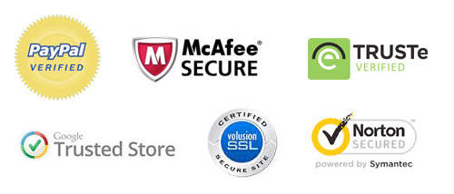
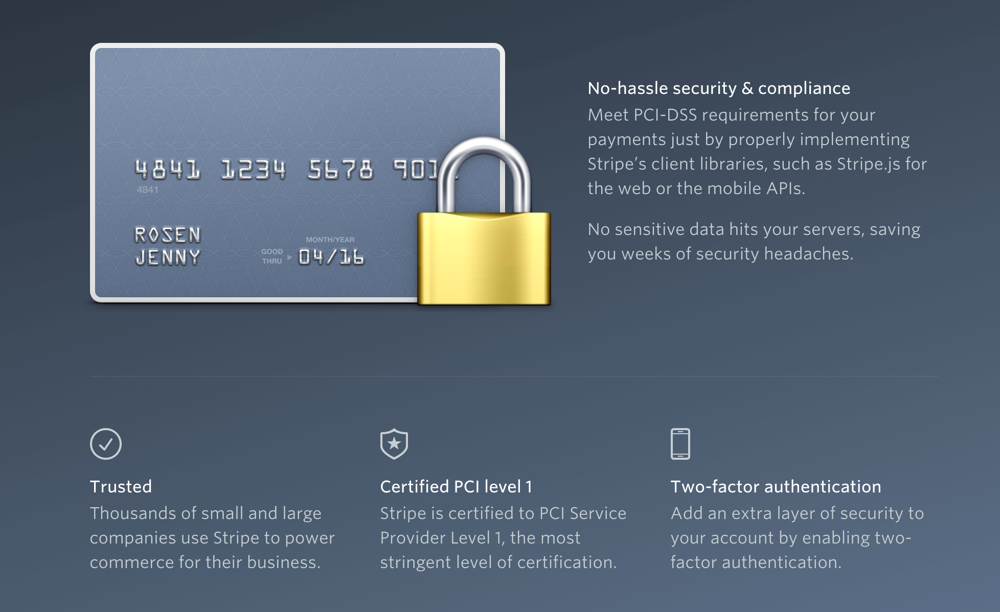
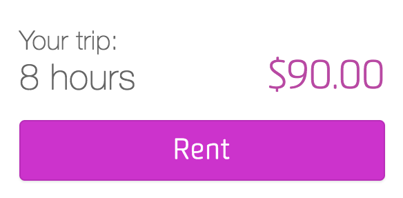

What is Trust?
There is no universally accepted definition of trust. The lack of agreement on this can be due to the different fields researching the topic. A disciplinary lens often skews perspective and causes psychologists to see trust as a personal trait, sociologists to see trust as a social structure, and economists to see trust as an economic choice mechanism. In the eyes of the designer, trust isn’t clearly defined, but is a tool used when creating digital experiences. When looking at interfaces, it’s clear that trust isn’t binary, but rather a spectrum of different flavors. Different products require different forms or strengths of trusts. Trust in an email subscription, trust in a news source, trust in a payment service or even trusting that a device shows the correct time are all experiences that design for trust, and yet create a completely different relationship between user and product. One common theme, is that you put trust in a product when it can put you in a position of vulnerability. The consequences of this vulnerability are what create the spectrum and genre of trust.
Interdisciplinary model of Trust Types (Alharbi et al.)
Why do you need trust?
Inherently it may seem that every interface requires some degree of trust. Digital products and services are in the business of information sharing and collection - all interfaces communicate some form of information to the users. If this information can’t be trusted the interface is rendered useless. More interesting than the existence of trust in digital products, is situations where products would fail due to lack of trust. Think of a situation where you have left a user funnel due to lack of trust in an interface: you didn’t share your email or name, didn’t input your credit card number or didn’t download that highly suspicious file. These are all situations where a lack of trust in the interface has led to ultimate failure of the product. This failure can directly affect conversion rates, engagement, adoption and other metrics that typically directly define success.
Building Trust
Research into trust has exponentially increased with the rapid expansion of information systems. Many papers attempt to define the constructs of trust, or the characteristics that can foster trust. These differ from field to field, but some commonality exists between these. While this trust is typically interpersonal, some of these constructs can help establish design patterns that also help build trust between user and interface.
- Familiarity/Predictability: The more different or unfamiliar something/someone is, the harder it is to trust. When anything behaves in an unexpected manner, people are often quick to be suspicious. Unexpected behavior or results often create an initial sense of wariness that creates a barrier to overcome.
- Competence/Credibility: This can be established through interactions, reputation, history, etc. Credibility does not necessarily need to come from an official source, and could simple be provided by social proof
- Honesty/Integrity: These much more intangible, almost emotional constructs are often determined very subjectively. Determining whether an individual is honest/has integrity is a decision making process, easily influenced by the typical cognitive biases.
Can you rebuild trust if it has been broken? Building trust from a neutral standpoint is not as difficult as mending a break in trust. Overcoming this barrier can sometimes prove to be insurmountable, particularly through interface design alone. This is one of the few reasons why it’s so important to design trust into your product from the get go.
Design Takeaways
In product design, there exists a constant battle between the reward for completing an action, and the work required to receive it. Think of trust as another tool designers can use to overcome this hurdle. Below are the considerations that should be taken into account to help you design for trust.
- Social Proof: This can come in the form of testimonials, friend recommendations or word-of-mouth. Incorporating the human aspect into your design, and building this community can really establish trust in your design. Airbnb and Stanford published research proving that reputation can help people overcome barriers to trust in situations where a user might not otherwise proceed.
- Certification: This is a little harder to accomplish in the digital age, but having certifications of excellence or verifications of authenticities can help build trust in your designs. Verified payment services are a prime example of this. 
- Brand: a marketing tool that has been used since the analogue age, the brand of the product strongly influences not only the reputation, but the emotional response and decisions making process of a user. Imagery, color and copy can influence the feeling of trust that your brand invokes.
- User Centered Design: Making it seem as if the product aims to protect the user is a key feature that can help establish trust. The sense of focusing on the user goals and needs, and prioritizing this over company goals often helps establish a positive trust relationship.
- Layout: Avoid overwhelming or hidden information that looks as if it is trying to hide details. Make it clear what you are trying to offer, making it easy for users to learn more and discover if they so choose. Hiding key information as smaller, hidden below the fold, in carousels or in hidden elements can reduce trust.
- Sensitive Information Treatment: Complete transparency is crucial when dealing with sensitive information. What is sensitive varies between products and users so know youre user base well. Acknowledge the sensitivity of the information and show steps on how this privacy is being protected. 
- Context: This is extremely important when building trust in a product. Confusing experiences and irrelevance of provided information can severely decrease a user's trust. Trust is often decided based on previous experiences of the user, so an understanding of their context can help designers create products that users can relate to.
- Expectations: When users expectations are not met, this leads to automatic distrust in a product or service. Even when it is the user experience itself, be it the user funnel/journey, an unexpected event can lead to an unpleasant and untrsutworthy experience.
Online Certifications to prove authenticity
Stripe Protection of User Data
Ethics
Viruses, scams or even cat-fishing are all cases of online fraud that are unanimously malicious. The existence of these threats has created a need for businesses to develop an artificial trust between user and product. As a designer, it is important to recognize the influence designing for trust can have on users. Think critically about the implications of creating a product that builds trust, and how that trust is being manipulated. A prime example of this manipulation is in user data acquisition. A major point of contention between individuals and businesses has been the analysis and sale of personal data. When users provide their data to a business upon signup, there is typically an implicit sense of trust in the product. Take care to ensure that users' are aware and informed, and do not use their trust to manipulate their decisions in an unethical manner. This can be applied to a variety of products and services - particularly to online pyramid schemes and subscriptions.
Case Study: Airbnb & Getaround
Airbnb is an industry leader in designing for trust. In fact, this is one of the biggest challenges they face in the design of their product. They must inherently build trust not only between the service and the user, but also between the users' as well. With this in mind, Airbnb has created a product that fosters both trust and community. Looking at their web application, it is easy to see how they are applying good design for trust methodologies to engage their users.
- Social Proof: Airbnb's product is centered around providing social proof to build up the reputation of their service and the reputation of their users. By having both hosts and guests review one another after each stay, users are contributing to the growth of Airbnb's and each others' reputation in what feels like a seamless experience. Making reviews come from a real individual who has used the product gives this digital service a more human feel, and makes the reviews seem more authentic. This also helps develop and grow the community as more and more users continue to share their Airbnb experiences.
- Context: Another experience that makes the service seem more trustworthy is the method in which Airbnb first introduces hosts and guests. While this may seem a simple step in the booking process, it provides a great deal of value towards building trust between users'. This step provides context and some background information that is the first step in establishing a relationship with and open communication channel between guest and host. The personalized message, the size of the input field and the prompting questions all aim to help the guest establish a connection with the host and vice versa.
- Certification: Airbnb requires a standard proof of identity, with options to provide more information to further validate your identity. The use of official documents and personal contact information to provide authentication for a user makes their service feel more trustworthy. The level of verification is displayed
- Sensitive Information: In creating a service that deals with sensitive user information, its important to what information users consider private, and how to share that information with others. While it is obvious that payment information should be kept private, what is less clear is other personal details such as contact information, opinions, etc. Airbnb's design of the host address location indicates that this is sensitive user information. The general location of the house is provided, but the specific address is only shared after a booking has been confirmed. This shows a sensitivity to privacy, as well as knowledge of when privacy can be overcome that instills a sense of trust in the services capability to protect its users and their information.
- Expectations: One of the largest points of concern for users interacting with e-commerce services is the payment. Hidden fees or additional taxes, as well as when in the flow you actually confirm payment are often points of confusion. Airbnb does an excellent job by providing all details up front and managing user expectations. With the option to learn more about all the different fees, and the copy below the Book button letting a user know that they won't be charged yet, this experience is designed to inform the user. By providing complete transparency to the user, the service feels more honest and trustworthy.

Airbnb First Host Contact

Airbnb User Verification - Profile Page

Airbnb Host Address Map

Airbnb Booking Design
It is obvious from the care they take in designing trust into their experience, that Airbnb understands the important of this in their product. Validation of their well executed design exists beyond just Airbnb's popularity. A look as many similar products that have surfaced after Airbnb is a testament to their success. Looking at Getaround, their service is very comparable to Airbnb where trust is a necessity in their product.

Getaround homepage
Getaround is a car sharing service where users can provide or lease cars for a specific amount of time. While their design take inspiration from Airbnb, they have some strengths and some weaknesses to their product.
- Certification: Every user of Getaround must provide a legal drivers license which is then cross referenced with the DMV or international equivalent to see a users driving history. Entrusting a stranger to drive your car is difficult, but drivers with any past tickets or accidents are not permitted to lease, making the remaining drivers feel more trustworthy.
- Expectations: From personal experience and from user reviews, its seems that Getaround has a major issue with their payment service. Specifically, they have failed to communicate the total cost of rental making users feel as if there are secret or hidden fees. The lack of transparency about these fees make it feel as if they are intentionally being kept from the user and foster a sensation of distrust in the service. In order to rectify the situation, Getaround should provide clear details about any additional fees when a user is renting a car.
- Layout: The layout and navigation of the site is a little confusing when you first enter. Below is a widget on the rental screen. This widget fails to provide some key information about the breakdown of the cost. It is unclear as to whether or not clicking rent will automatically book the car, or just take you to a page that provides more details. The lack of information and confusing layout could deter users from using this service as it feels as if Getaround is not providing sufficient information.
- Brand: One of the perils of a younger company is a lack of effort and resources dedicated to developing a brand. For many companies, this (rightfully so) takes a back seat to the development of a functional product. However, when engagement with your product depends on a key feature of you brand, its often important to consider both marketing and product during design and development. For Getaround, their brand does not invoke a sense of trust or confidence. There dark palette, lack of people in their imagery, and lack of consistency in their visual design and interaction patterns makes the service feel unpolished. For products that require trust to function, this can seriously reduce conversion and dissuade new users from using the product.

Getaround verification process
